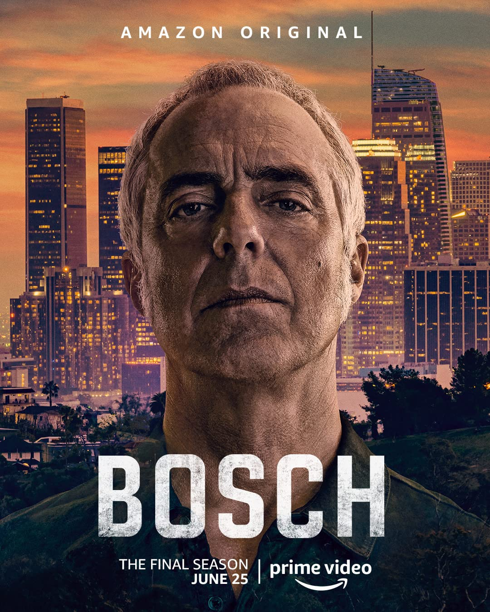

Mr. Robot
IMDB Rating: 8.5/10
4 Seasons
Synapse
Elliot is a brilliant introverted young programmer who works as a cyber-security engineer by day and vigilante hacker by night. He also happens to be suffering from a strange condition similar to schizophrenia which he futilely tries to keep under control by regularly taking both legal and illegal drugs and visiting his therapist. When a strange feisty young woman named Darlene and a secretive middle-aged man calling himself Mr. Robot, who claims to be the mysterious leader of an underground hacking group known as F-Society, offer Elliot a chance to take his vigilantism to the next level and help them take down E-Corp, the corrupt multi-national financial company that Elliot works for and likes to call Evil Corp, Elliot finds himself at the crossroads. Mr. Robot, who has personal reasons for wanting to take down E-Corp, also reveals that he already has one ally, an even more mysterious, secretive and highly dangerous shadowy hacking group known only as Dark Army. Meanwhile, Elliot's childhood and only friend, Angela, who blames E-Corp for the death of their parents, tries to take down E-Corp legally by joining their ranks and trying to dig up evidence of their corruption from the inside. A wild card in this scheme becomes Tyrell Wellick, an unhinged psychopathic E-Corp yuppie, originally from Scandinavia, who has a very unusual relationship with his dominant and ambitious wife Joanna. After many twists and turns, Mr. Robot's plan is finally put in motion - with catastrophic (un)intended results. But that's just the end of the beginning of the real story.
- To be watched on:
- 
Bosch
IMDB Rating: 8.5/10
7 Seasons
Synapse
Harry Bosch is a homicide detective in the LAPD. He is doggedly determined to solve the cases that come his way, relying on good old-fashioned police work: following leads, looking for the smallest of clues, gathering evidence. He doesn't always toe the party line which often gets him into trouble with his superiors but he always gets the perpetrator, which more than makes up for this.
- To be watched on:
The Handmaid's Tale
IMDB Rating: 8.4/10
6 Seasons
Synapse
A religion-based autocracy has taken over most of the United States, renaming the country Gilead. In this country women are second-class citizens. Anyone trying to escape is punished. One such person is June, who is captured while trying to escape with her husband and child and is sentenced to be a handmaid, bearing children for childless government officials. As a handmaid, June is renamed Offred. This is her story.
- To be watched on: